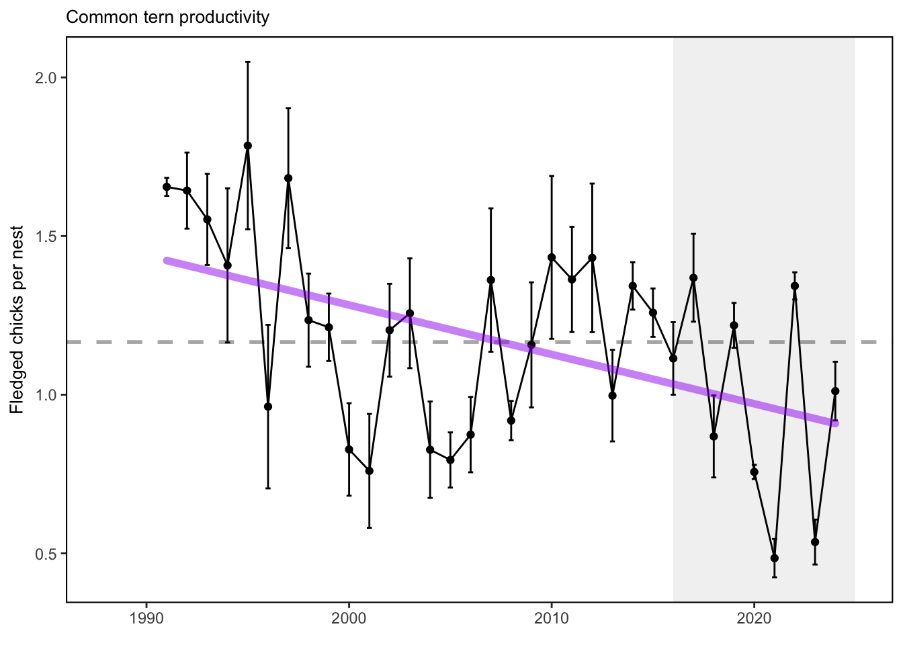
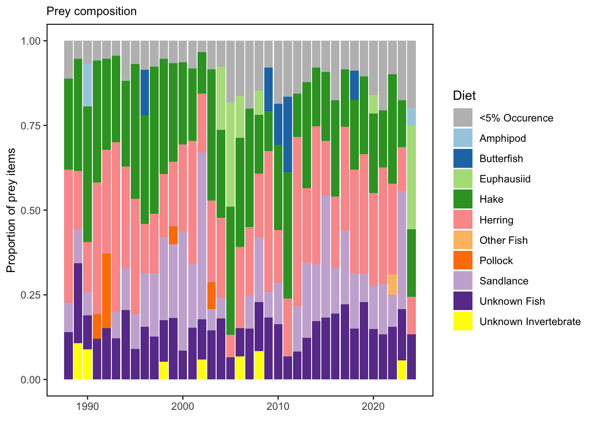
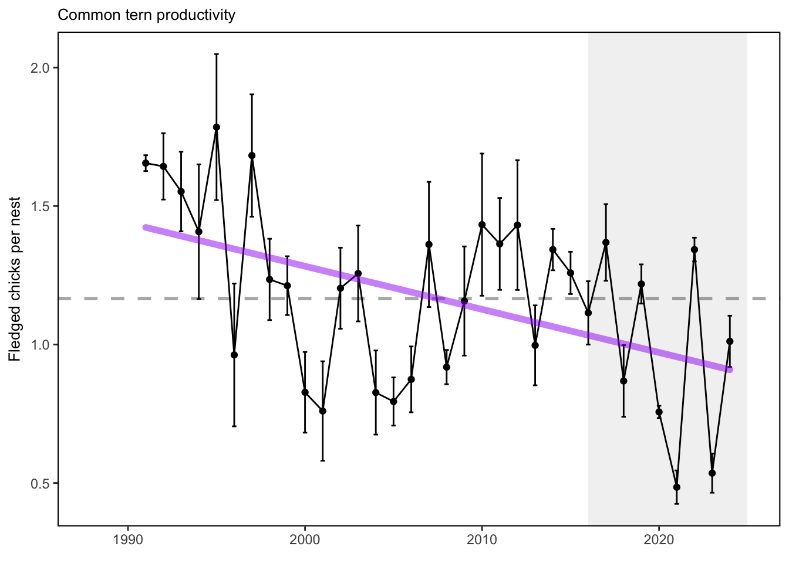
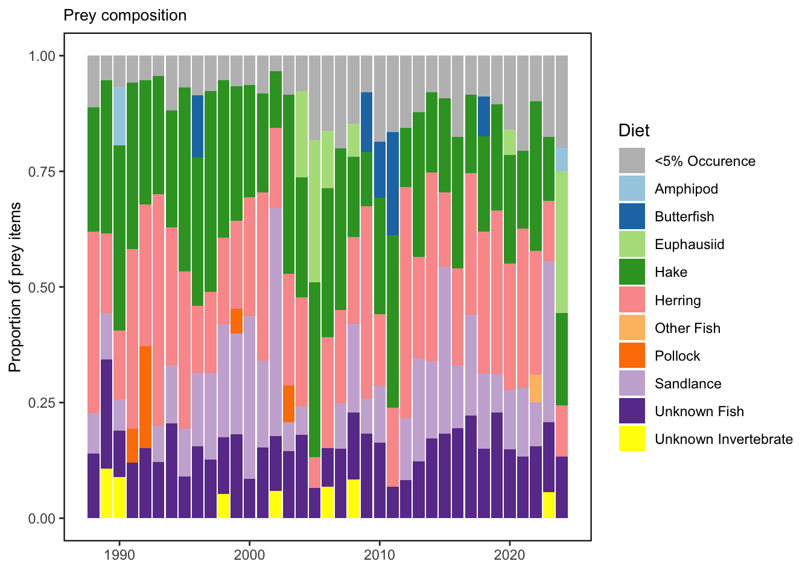

SMART Indicator Report: Seabird diet and productivity - New England
2 Indicator name
Seabird diet and productivity - New England
Includes variable(s): EER COTE Amphipod, EER COTE Bluefish, EER COTE Butterfish, EER COTE Euphausiid, EER COTE Hake, EER COTE Herring, EER COTE Lumpfish, EER COTE Mackerel, EER COTE Other Fish, EER COTE Other Invertebrate, EER COTE Pollock, EER COTE Productivity, EER COTE Sandlance, EER COTE Silverside, EER COTE Three-spined Stickleback, EER COTE Unknown Fish, EER COTE Unknown Invertebrate, JI COTE Amphipod, JI COTE Bluefish, JI COTE Butterfish, JI COTE Euphausiid, JI COTE Hake, JI COTE Herring, JI COTE Lumpfish, JI COTE Mackerel, JI COTE Other Fish, JI COTE Other Invertebrate, JI COTE Pollock, JI COTE Productivity, JI COTE Sandlance, JI COTE Silverside, JI COTE Three-spined Stickleback, JI COTE Unknown Fish, JI COTE Unknown Invertebrate, MR COTE Amphipod, MR COTE Bluefish, MR COTE Butterfish, MR COTE Euphausiid, MR COTE Hake, MR COTE Herring, MR COTE Lumpfish, MR COTE Mackerel, MR COTE Other Fish, MR COTE Other Invertebrate, MR COTE Pollock, MR COTE Productivity, MR COTE Sandlance, MR COTE Silverside, MR COTE Three-spined Stickleback, MR COTE Unknown Fish, MR COTE Unknown Invertebrate, OGI COTE Amphipod, OGI COTE Bluefish, OGI COTE Butterfish, OGI COTE Euphausiid, OGI COTE Hake, OGI COTE Herring, OGI COTE Lumpfish, OGI COTE Mackerel, OGI COTE Other Fish, OGI COTE Other Invertebrate, OGI COTE Pollock, OGI COTE Productivity, OGI COTE Sandlance, OGI COTE Silverside, OGI COTE Three-spined Stickleback, OGI COTE Unknown Fish, OGI COTE Unknown Invertebrate, PINWR COTE Amphipod, PINWR COTE Bluefish, PINWR COTE Butterfish, PINWR COTE Euphausiid, PINWR COTE Hake, PINWR COTE Herring, PINWR COTE Lumpfish, PINWR COTE Mackerel, PINWR COTE Other Fish, PINWR COTE Other Invertebrate, PINWR COTE Pollock, PINWR COTE Productivity, PINWR COTE Sandlance, PINWR COTE Silverside, PINWR COTE Three-spined Stickleback, PINWR COTE Unknown Fish, PINWR COTE Unknown Invertebrate, SINWR COTE Amphipod, SINWR COTE Bluefish, SINWR COTE Butterfish, SINWR COTE Euphausiid, SINWR COTE Hake, SINWR COTE Herring, SINWR COTE Lumpfish, SINWR COTE Mackerel, SINWR COTE Other Fish, SINWR COTE Other Invertebrate, SINWR COTE Pollock, SINWR COTE Productivity, SINWR COTE Sandlance, SINWR COTE Silverside, SINWR COTE Three-spined Stickleback, SINWR COTE Unknown Fish, SINWR COTE Unknown Invertebrate, STI COTE Amphipod, STI COTE Bluefish, STI COTE Butterfish, STI COTE Euphausiid, STI COTE Hake, STI COTE Herring, STI COTE Lumpfish, STI COTE Mackerel, STI COTE Other Fish, STI COTE Other Invertebrate, STI COTE Pollock, STI COTE Productivity, STI COTE Sandlance, STI COTE Silverside, STI COTE Three-spined Stickleback, STI COTE Unknown Fish, STI COTE Unknown Invertebrate
3 Indicator brief description
Common tern annual diet and productivity at seven Gulf of Maine colonies managed by the National Audubon Society’s Seabird Restoration Program
4 Indicator visualization
GOM common tern average productivity (fledglings per nest) across 7 colonies has varied over time. The pattern is similar to that observed for fish condition (high before 2000, lower 2001-2009, higher/variable since 2010. Productivity is affected by both food and predation mortality. While data on predation is lacking, productivity lows in 2004-2006 were associated with the abundance of euphausiids, and the 2018 productivity low with butterfish in tern diets. The presence of butterfish in tern diets reflects the extension of this warm water species into GOM. Due to their thin, deep body form, butterfish are often difficult for small seabird chicks to ingest and swallow, causing chicks to starve and/or parent birds to increase foraging effort. 2020 was a challenging year for terns raising chicks. While diet composition was similar to the long term average, the quantity of food readily available was apparently less than normal, particularly around the time of chick hatching. This may have been confounded by cold, wet weather when chicks would normally be close to fledging in mid-to-late July. Anecdotal observations showed that feeding rates were low at both those times.
## [1] "This indicator is for New England only."## [1] "This indicator is for New England only."## [1] "This indicator is for New England only." 

5 Indicator documentation
5.1 Are indicators available for others to use (data downloadable)?
Yes
5.1.1 Where can indicators be found?
Data: https://noaa-edab.github.io/ecodata/index.html
Description: https://noaa-edab.github.io/catalog/seabird_ne.html
Technical documentation: https://noaa-edab.github.io/tech-doc/seabird_ne.html
5.1.2 How often are they updated? Are future updates likely?
[need sequential look at datasets for update frequency. Future requires judgement]
5.1.3 Who is the contact?
Don Lyons, dlyons@audubon.org
5.2 Gather indicator statistics
5.2.1 Units
Indicator | Units |
|---|---|
EER COTE Amphipod | no Units field |
EER COTE Bluefish | no Units field |
EER COTE Butterfish | no Units field |
EER COTE Euphausiid | no Units field |
EER COTE Hake | no Units field |
EER COTE Herring | no Units field |
EER COTE Lumpfish | no Units field |
EER COTE Mackerel | no Units field |
EER COTE Other Fish | no Units field |
EER COTE Other Invertebrate | no Units field |
EER COTE Pollock | no Units field |
EER COTE Productivity | no Units field |
EER COTE Sandlance | no Units field |
EER COTE Silverside | no Units field |
EER COTE Three-spined Stickleback | no Units field |
EER COTE Unknown Fish | no Units field |
EER COTE Unknown Invertebrate | no Units field |
JI COTE Amphipod | no Units field |
JI COTE Bluefish | no Units field |
JI COTE Butterfish | no Units field |
JI COTE Euphausiid | no Units field |
JI COTE Hake | no Units field |
JI COTE Herring | no Units field |
JI COTE Lumpfish | no Units field |
JI COTE Mackerel | no Units field |
JI COTE Other Fish | no Units field |
JI COTE Other Invertebrate | no Units field |
JI COTE Pollock | no Units field |
JI COTE Productivity | no Units field |
JI COTE Sandlance | no Units field |
JI COTE Silverside | no Units field |
JI COTE Three-spined Stickleback | no Units field |
JI COTE Unknown Fish | no Units field |
JI COTE Unknown Invertebrate | no Units field |
MR COTE Amphipod | no Units field |
MR COTE Bluefish | no Units field |
MR COTE Butterfish | no Units field |
MR COTE Euphausiid | no Units field |
MR COTE Hake | no Units field |
MR COTE Herring | no Units field |
MR COTE Lumpfish | no Units field |
MR COTE Mackerel | no Units field |
MR COTE Other Fish | no Units field |
MR COTE Other Invertebrate | no Units field |
MR COTE Pollock | no Units field |
MR COTE Productivity | no Units field |
MR COTE Sandlance | no Units field |
MR COTE Silverside | no Units field |
MR COTE Three-spined Stickleback | no Units field |
MR COTE Unknown Fish | no Units field |
MR COTE Unknown Invertebrate | no Units field |
OGI COTE Amphipod | no Units field |
OGI COTE Bluefish | no Units field |
OGI COTE Butterfish | no Units field |
OGI COTE Euphausiid | no Units field |
OGI COTE Hake | no Units field |
OGI COTE Herring | no Units field |
OGI COTE Lumpfish | no Units field |
OGI COTE Mackerel | no Units field |
OGI COTE Other Fish | no Units field |
OGI COTE Other Invertebrate | no Units field |
OGI COTE Pollock | no Units field |
OGI COTE Productivity | no Units field |
OGI COTE Sandlance | no Units field |
OGI COTE Silverside | no Units field |
OGI COTE Three-spined Stickleback | no Units field |
OGI COTE Unknown Fish | no Units field |
OGI COTE Unknown Invertebrate | no Units field |
PINWR COTE Amphipod | no Units field |
PINWR COTE Bluefish | no Units field |
PINWR COTE Butterfish | no Units field |
PINWR COTE Euphausiid | no Units field |
PINWR COTE Hake | no Units field |
PINWR COTE Herring | no Units field |
PINWR COTE Lumpfish | no Units field |
PINWR COTE Mackerel | no Units field |
PINWR COTE Other Fish | no Units field |
PINWR COTE Other Invertebrate | no Units field |
PINWR COTE Pollock | no Units field |
PINWR COTE Productivity | no Units field |
PINWR COTE Sandlance | no Units field |
PINWR COTE Silverside | no Units field |
PINWR COTE Three-spined Stickleback | no Units field |
PINWR COTE Unknown Fish | no Units field |
PINWR COTE Unknown Invertebrate | no Units field |
SINWR COTE Amphipod | no Units field |
SINWR COTE Bluefish | no Units field |
SINWR COTE Butterfish | no Units field |
SINWR COTE Euphausiid | no Units field |
SINWR COTE Hake | no Units field |
SINWR COTE Herring | no Units field |
SINWR COTE Lumpfish | no Units field |
SINWR COTE Mackerel | no Units field |
SINWR COTE Other Fish | no Units field |
SINWR COTE Other Invertebrate | no Units field |
SINWR COTE Pollock | no Units field |
SINWR COTE Productivity | no Units field |
SINWR COTE Sandlance | no Units field |
SINWR COTE Silverside | no Units field |
SINWR COTE Three-spined Stickleback | no Units field |
SINWR COTE Unknown Fish | no Units field |
SINWR COTE Unknown Invertebrate | no Units field |
STI COTE Amphipod | no Units field |
STI COTE Bluefish | no Units field |
STI COTE Butterfish | no Units field |
STI COTE Euphausiid | no Units field |
STI COTE Hake | no Units field |
STI COTE Herring | no Units field |
STI COTE Lumpfish | no Units field |
STI COTE Mackerel | no Units field |
STI COTE Other Fish | no Units field |
STI COTE Other Invertebrate | no Units field |
STI COTE Pollock | no Units field |
STI COTE Productivity | no Units field |
STI COTE Sandlance | no Units field |
STI COTE Silverside | no Units field |
STI COTE Three-spined Stickleback | no Units field |
STI COTE Unknown Fish | no Units field |
STI COTE Unknown Invertebrate | no Units field |
5.2.2 Length of time series, start and end date, periodicity
General overview: Spring and summer seabird breeding season
Indicator specifics:
Indicator | EPU | StartYear | EndYear | NumYears | MissingYears |
|---|---|---|---|---|---|
EER COTE Amphipod | GOM | 1988 | 2024 | 36 | 1 |
EER COTE Bluefish | GOM | 1988 | 2024 | 36 | 1 |
EER COTE Butterfish | GOM | 1988 | 2024 | 36 | 1 |
EER COTE Euphausiid | GOM | 1988 | 2024 | 36 | 1 |
EER COTE Hake | GOM | 1988 | 2024 | 36 | 1 |
EER COTE Herring | GOM | 1988 | 2024 | 36 | 1 |
EER COTE Lumpfish | GOM | 1988 | 2024 | 36 | 1 |
EER COTE Mackerel | GOM | 1988 | 2024 | 36 | 1 |
EER COTE Other Fish | GOM | 1988 | 2024 | 36 | 1 |
EER COTE Other Invertebrate | GOM | 1988 | 2024 | 36 | 1 |
EER COTE Pollock | GOM | 1988 | 2024 | 36 | 1 |
EER COTE Productivity | GOM | 1991 | 2024 | 33 | 1 |
EER COTE Sandlance | GOM | 1988 | 2024 | 36 | 1 |
EER COTE Silverside | GOM | 1988 | 2024 | 36 | 1 |
EER COTE Three-spined Stickleback | GOM | 1988 | 2024 | 36 | 1 |
EER COTE Unknown Fish | GOM | 1988 | 2024 | 36 | 1 |
EER COTE Unknown Invertebrate | GOM | 1988 | 2024 | 36 | 1 |
JI COTE Amphipod | GOM | 1991 | 2024 | 34 | 0 |
JI COTE Bluefish | GOM | 1991 | 2024 | 34 | 0 |
JI COTE Butterfish | GOM | 1991 | 2024 | 34 | 0 |
JI COTE Euphausiid | GOM | 1991 | 2024 | 34 | 0 |
JI COTE Hake | GOM | 1991 | 2024 | 34 | 0 |
JI COTE Herring | GOM | 1991 | 2024 | 34 | 0 |
JI COTE Lumpfish | GOM | 1991 | 2024 | 34 | 0 |
JI COTE Mackerel | GOM | 1991 | 2024 | 34 | 0 |
JI COTE Other Fish | GOM | 1991 | 2024 | 34 | 0 |
JI COTE Other Invertebrate | GOM | 1991 | 2024 | 34 | 0 |
JI COTE Pollock | GOM | 1991 | 2024 | 34 | 0 |
JI COTE Productivity | GOM | 1991 | 2024 | 31 | 3 |
JI COTE Sandlance | GOM | 1991 | 2024 | 34 | 0 |
JI COTE Silverside | GOM | 1991 | 2024 | 34 | 0 |
JI COTE Three-spined Stickleback | GOM | 1991 | 2024 | 34 | 0 |
JI COTE Unknown Fish | GOM | 1991 | 2024 | 34 | 0 |
JI COTE Unknown Invertebrate | GOM | 1991 | 2024 | 34 | 0 |
MR COTE Amphipod | GOM | 2003 | 2024 | 22 | 0 |
MR COTE Bluefish | GOM | 2003 | 2024 | 21 | 1 |
MR COTE Butterfish | GOM | 2003 | 2024 | 22 | 0 |
MR COTE Euphausiid | GOM | 2003 | 2024 | 21 | 1 |
MR COTE Hake | GOM | 2003 | 2024 | 22 | 0 |
MR COTE Herring | GOM | 2003 | 2024 | 22 | 0 |
MR COTE Lumpfish | GOM | 2003 | 2024 | 22 | 0 |
MR COTE Mackerel | GOM | 2003 | 2024 | 22 | 0 |
MR COTE Other Fish | GOM | 2003 | 2024 | 22 | 0 |
MR COTE Other Invertebrate | GOM | 2003 | 2024 | 22 | 0 |
MR COTE Pollock | GOM | 2003 | 2024 | 22 | 0 |
MR COTE Productivity | GOM | 2003 | 2024 | 22 | 0 |
MR COTE Sandlance | GOM | 2003 | 2024 | 22 | 0 |
MR COTE Silverside | GOM | 2003 | 2024 | 22 | 0 |
MR COTE Three-spined Stickleback | GOM | 2003 | 2024 | 22 | 0 |
MR COTE Unknown Fish | GOM | 2003 | 2024 | 22 | 0 |
MR COTE Unknown Invertebrate | GOM | 2003 | 2024 | 22 | 0 |
OGI COTE Amphipod | GOM | 2003 | 2024 | 22 | 0 |
OGI COTE Bluefish | GOM | 2003 | 2024 | 22 | 0 |
OGI COTE Butterfish | GOM | 2003 | 2024 | 22 | 0 |
OGI COTE Euphausiid | GOM | 2003 | 2024 | 22 | 0 |
OGI COTE Hake | GOM | 2003 | 2024 | 22 | 0 |
OGI COTE Herring | GOM | 2003 | 2024 | 22 | 0 |
OGI COTE Lumpfish | GOM | 2003 | 2024 | 22 | 0 |
OGI COTE Mackerel | GOM | 2003 | 2024 | 22 | 0 |
OGI COTE Other Fish | GOM | 2003 | 2024 | 22 | 0 |
OGI COTE Other Invertebrate | GOM | 2003 | 2024 | 22 | 0 |
OGI COTE Pollock | GOM | 2003 | 2024 | 22 | 0 |
OGI COTE Productivity | GOM | 2003 | 2024 | 22 | 0 |
OGI COTE Sandlance | GOM | 2003 | 2024 | 22 | 0 |
OGI COTE Silverside | GOM | 2003 | 2024 | 22 | 0 |
OGI COTE Three-spined Stickleback | GOM | 2003 | 2024 | 22 | 0 |
OGI COTE Unknown Fish | GOM | 2003 | 2024 | 22 | 0 |
OGI COTE Unknown Invertebrate | GOM | 2003 | 2024 | 22 | 0 |
PINWR COTE Amphipod | GOM | 1999 | 2024 | 25 | 1 |
PINWR COTE Bluefish | GOM | 1999 | 2024 | 25 | 1 |
PINWR COTE Butterfish | GOM | 1999 | 2024 | 25 | 1 |
PINWR COTE Euphausiid | GOM | 1999 | 2024 | 25 | 1 |
PINWR COTE Hake | GOM | 1999 | 2024 | 25 | 1 |
PINWR COTE Herring | GOM | 1999 | 2024 | 25 | 1 |
PINWR COTE Lumpfish | GOM | 1999 | 2024 | 25 | 1 |
PINWR COTE Mackerel | GOM | 1999 | 2024 | 25 | 1 |
PINWR COTE Other Fish | GOM | 1999 | 2024 | 25 | 1 |
PINWR COTE Other Invertebrate | GOM | 1999 | 2024 | 25 | 1 |
PINWR COTE Pollock | GOM | 1999 | 2024 | 25 | 1 |
PINWR COTE Productivity | GOM | 2000 | 2024 | 23 | 2 |
PINWR COTE Sandlance | GOM | 1999 | 2024 | 25 | 1 |
PINWR COTE Silverside | GOM | 1999 | 2024 | 25 | 1 |
PINWR COTE Three-spined Stickleback | GOM | 1999 | 2024 | 25 | 1 |
PINWR COTE Unknown Fish | GOM | 1999 | 2024 | 25 | 1 |
PINWR COTE Unknown Invertebrate | GOM | 1999 | 2024 | 25 | 1 |
SINWR COTE Amphipod | GOM | 1992 | 2024 | 25 | 8 |
SINWR COTE Bluefish | GOM | 1992 | 2024 | 25 | 8 |
SINWR COTE Butterfish | GOM | 1992 | 2024 | 25 | 8 |
SINWR COTE Euphausiid | GOM | 1992 | 2024 | 25 | 8 |
SINWR COTE Hake | GOM | 1992 | 2024 | 25 | 8 |
SINWR COTE Herring | GOM | 1992 | 2024 | 25 | 8 |
SINWR COTE Lumpfish | GOM | 1992 | 2024 | 25 | 8 |
SINWR COTE Mackerel | GOM | 1992 | 2024 | 25 | 8 |
SINWR COTE Other Fish | GOM | 1992 | 2024 | 25 | 8 |
SINWR COTE Other Invertebrate | GOM | 1992 | 2024 | 25 | 8 |
SINWR COTE Pollock | GOM | 1992 | 2024 | 25 | 8 |
SINWR COTE Productivity | GOM | 1992 | 2024 | 33 | 0 |
SINWR COTE Sandlance | GOM | 1992 | 2024 | 25 | 8 |
SINWR COTE Silverside | GOM | 1992 | 2024 | 25 | 8 |
SINWR COTE Three-spined Stickleback | GOM | 1992 | 2024 | 25 | 8 |
SINWR COTE Unknown Fish | GOM | 1992 | 2024 | 25 | 8 |
SINWR COTE Unknown Invertebrate | GOM | 1992 | 2024 | 25 | 8 |
STI COTE Amphipod | GOM | 1988 | 2024 | 36 | 1 |
STI COTE Bluefish | GOM | 1988 | 2024 | 36 | 1 |
STI COTE Butterfish | GOM | 1988 | 2024 | 36 | 1 |
STI COTE Euphausiid | GOM | 1988 | 2024 | 36 | 1 |
STI COTE Hake | GOM | 1988 | 2024 | 36 | 1 |
STI COTE Herring | GOM | 1988 | 2024 | 36 | 1 |
STI COTE Lumpfish | GOM | 1988 | 2024 | 36 | 1 |
STI COTE Mackerel | GOM | 1988 | 2024 | 36 | 1 |
STI COTE Other Fish | GOM | 1988 | 2024 | 36 | 1 |
STI COTE Other Invertebrate | GOM | 1988 | 2024 | 36 | 1 |
STI COTE Pollock | GOM | 1988 | 2024 | 36 | 1 |
STI COTE Productivity | GOM | 1988 | 2024 | 32 | 5 |
STI COTE Sandlance | GOM | 1988 | 2024 | 36 | 1 |
STI COTE Silverside | GOM | 1988 | 2024 | 36 | 1 |
STI COTE Three-spined Stickleback | GOM | 1988 | 2024 | 36 | 1 |
STI COTE Unknown Fish | GOM | 1988 | 2024 | 36 | 1 |
STI COTE Unknown Invertebrate | GOM | 1988 | 2024 | 36 | 1 |
5.2.3 Spatial location, scale and extent
General overview: Gulf of Maine coastal areas
Indicator specifics:
Indicator | EPU |
|---|---|
EER COTE Amphipod | GOM |
EER COTE Bluefish | GOM |
EER COTE Butterfish | GOM |
EER COTE Euphausiid | GOM |
EER COTE Hake | GOM |
EER COTE Herring | GOM |
EER COTE Lumpfish | GOM |
EER COTE Mackerel | GOM |
EER COTE Other Fish | GOM |
EER COTE Other Invertebrate | GOM |
EER COTE Pollock | GOM |
EER COTE Productivity | GOM |
EER COTE Sandlance | GOM |
EER COTE Silverside | GOM |
EER COTE Three-spined Stickleback | GOM |
EER COTE Unknown Fish | GOM |
EER COTE Unknown Invertebrate | GOM |
JI COTE Amphipod | GOM |
JI COTE Bluefish | GOM |
JI COTE Butterfish | GOM |
JI COTE Euphausiid | GOM |
JI COTE Hake | GOM |
JI COTE Herring | GOM |
JI COTE Lumpfish | GOM |
JI COTE Mackerel | GOM |
JI COTE Other Fish | GOM |
JI COTE Other Invertebrate | GOM |
JI COTE Pollock | GOM |
JI COTE Productivity | GOM |
JI COTE Sandlance | GOM |
JI COTE Silverside | GOM |
JI COTE Three-spined Stickleback | GOM |
JI COTE Unknown Fish | GOM |
JI COTE Unknown Invertebrate | GOM |
MR COTE Amphipod | GOM |
MR COTE Bluefish | GOM |
MR COTE Butterfish | GOM |
MR COTE Euphausiid | GOM |
MR COTE Hake | GOM |
MR COTE Herring | GOM |
MR COTE Lumpfish | GOM |
MR COTE Mackerel | GOM |
MR COTE Other Fish | GOM |
MR COTE Other Invertebrate | GOM |
MR COTE Pollock | GOM |
MR COTE Productivity | GOM |
MR COTE Sandlance | GOM |
MR COTE Silverside | GOM |
MR COTE Three-spined Stickleback | GOM |
MR COTE Unknown Fish | GOM |
MR COTE Unknown Invertebrate | GOM |
OGI COTE Amphipod | GOM |
OGI COTE Bluefish | GOM |
OGI COTE Butterfish | GOM |
OGI COTE Euphausiid | GOM |
OGI COTE Hake | GOM |
OGI COTE Herring | GOM |
OGI COTE Lumpfish | GOM |
OGI COTE Mackerel | GOM |
OGI COTE Other Fish | GOM |
OGI COTE Other Invertebrate | GOM |
OGI COTE Pollock | GOM |
OGI COTE Productivity | GOM |
OGI COTE Sandlance | GOM |
OGI COTE Silverside | GOM |
OGI COTE Three-spined Stickleback | GOM |
OGI COTE Unknown Fish | GOM |
OGI COTE Unknown Invertebrate | GOM |
PINWR COTE Amphipod | GOM |
PINWR COTE Bluefish | GOM |
PINWR COTE Butterfish | GOM |
PINWR COTE Euphausiid | GOM |
PINWR COTE Hake | GOM |
PINWR COTE Herring | GOM |
PINWR COTE Lumpfish | GOM |
PINWR COTE Mackerel | GOM |
PINWR COTE Other Fish | GOM |
PINWR COTE Other Invertebrate | GOM |
PINWR COTE Pollock | GOM |
PINWR COTE Productivity | GOM |
PINWR COTE Sandlance | GOM |
PINWR COTE Silverside | GOM |
PINWR COTE Three-spined Stickleback | GOM |
PINWR COTE Unknown Fish | GOM |
PINWR COTE Unknown Invertebrate | GOM |
SINWR COTE Amphipod | GOM |
SINWR COTE Bluefish | GOM |
SINWR COTE Butterfish | GOM |
SINWR COTE Euphausiid | GOM |
SINWR COTE Hake | GOM |
SINWR COTE Herring | GOM |
SINWR COTE Lumpfish | GOM |
SINWR COTE Mackerel | GOM |
SINWR COTE Other Fish | GOM |
SINWR COTE Other Invertebrate | GOM |
SINWR COTE Pollock | GOM |
SINWR COTE Productivity | GOM |
SINWR COTE Sandlance | GOM |
SINWR COTE Silverside | GOM |
SINWR COTE Three-spined Stickleback | GOM |
SINWR COTE Unknown Fish | GOM |
SINWR COTE Unknown Invertebrate | GOM |
STI COTE Amphipod | GOM |
STI COTE Bluefish | GOM |
STI COTE Butterfish | GOM |
STI COTE Euphausiid | GOM |
STI COTE Hake | GOM |
STI COTE Herring | GOM |
STI COTE Lumpfish | GOM |
STI COTE Mackerel | GOM |
STI COTE Other Fish | GOM |
STI COTE Other Invertebrate | GOM |
STI COTE Pollock | GOM |
STI COTE Productivity | GOM |
STI COTE Sandlance | GOM |
STI COTE Silverside | GOM |
STI COTE Three-spined Stickleback | GOM |
STI COTE Unknown Fish | GOM |
STI COTE Unknown Invertebrate | GOM |
5.3 Are methods clearly documented to obtain source data and calculate indicators?
Yes
5.3.1 Can the indicator be calculated from current documentation?
Raw diet data were used to create time series of mean shannon diversity through time and across study sites using the vegan R package (Dixon 2003). Code for this calculation can be found here. Diet diversity is presented along with nest productivity (+/- 1 SE).
5.4 Are indicator underlying source data linked or easy to find?
Please email dlyons@audubon.org for further information and queries on this indicator source data.
5.4.1 Where are source data stored?
Common tern diet and nest productivity data were provided by the National Audubon Society’s Seabird Restoration Program.
5.4.2 How/by whom are source data updated? Are future updates likely?
Don Lyons, dlyons@audubon.org
[likelihood of source data updates requires judgement, enter by hand]
6 Indicator analysis/testing or history of use
6.1 What decision or advice processes are the indicators currently used in?
Seabird breeding colonies in the Gulf of Maine (GOM) are monitored and managed to promote recovery of formerly harvested seabird species. Common terns are well-monitored and are considered good nearshore ecosystem indicators due to their wide distribution and generalist diet. Common terns breed on islands throughout the Gulf of Maine, feeding on a wide range of invertebrates and fish including Atlantic herring, juvenile (mainly white) hakes, and sand lance. As surface feeding birds, terns are sensitive to vertical distribution of prey as well as nearshore conditions in general, with a foraging distance of 10-20 km from a nesting colony.
6.2 What implications of the indicators are currently listed?
Declining productivity across multiple common tern colonies in the Gulf of Maine may indicate changes in the distribution, quality, and quantity of prey over time.
6.3 Do target, limit, or threshold values already exist for the indicator?
[Fill by hand; if not in key results or implications, likely does not exist]
6.4 Have the indicators been tested to ensure they respond proportionally to a change in the underlying process?
[Fill by hand; if not in introduction, key results, or implications, likely not tested]
7 Comments
[Fill below by hand once above data complete]
7.1 Additional potential links to management in addition to uses listed above
7.2 What additional work would be needed for the Council to use the indicator?
7.3 What issues are caused if there is a gap or delay in data underlying the indicator